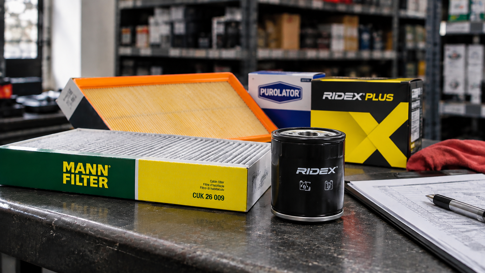
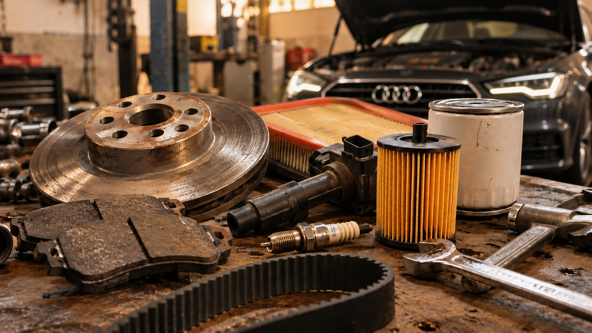
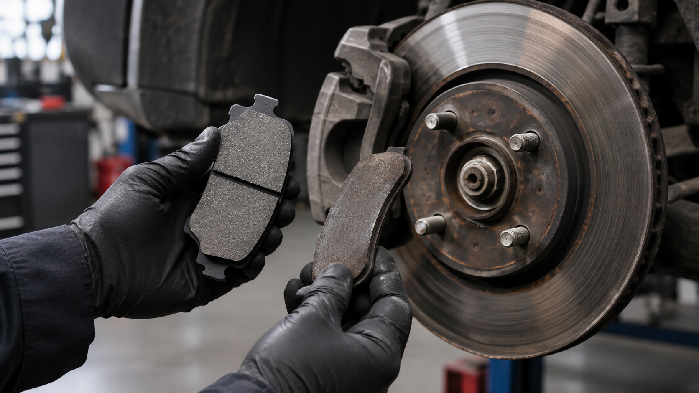
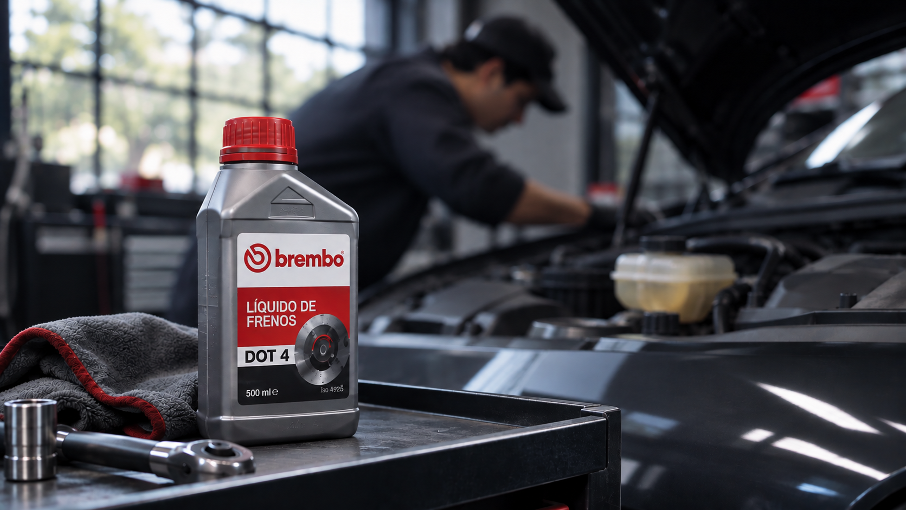
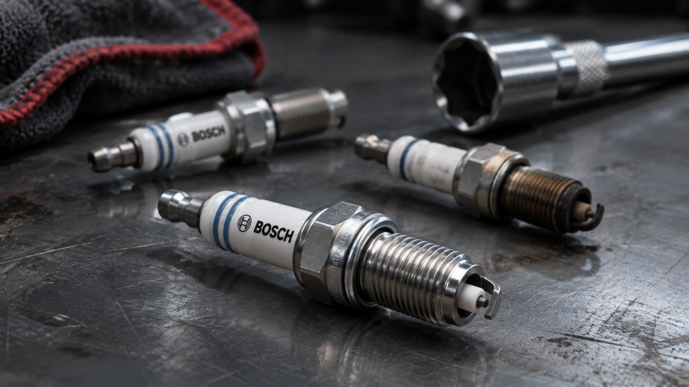
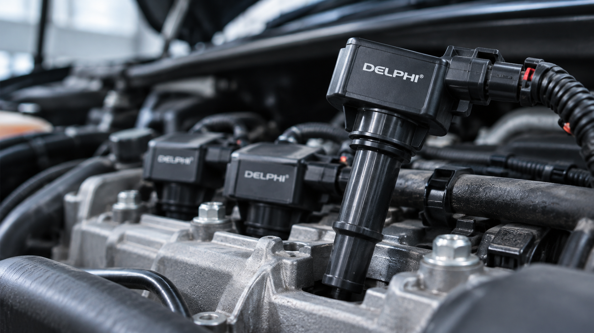
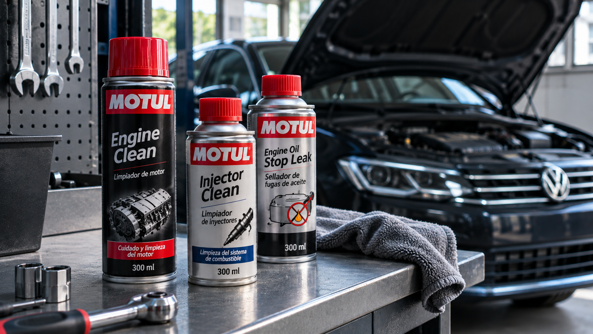
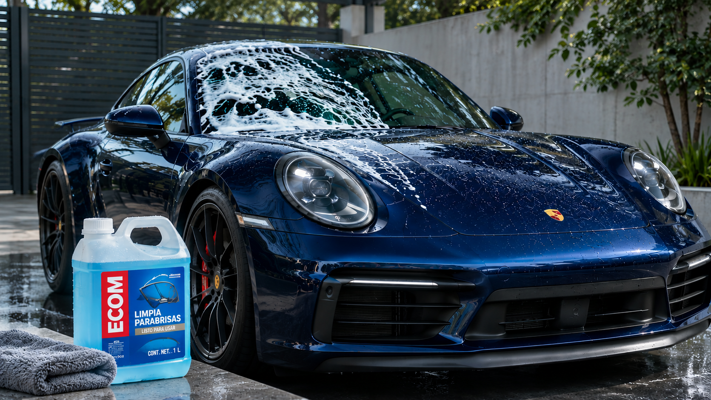
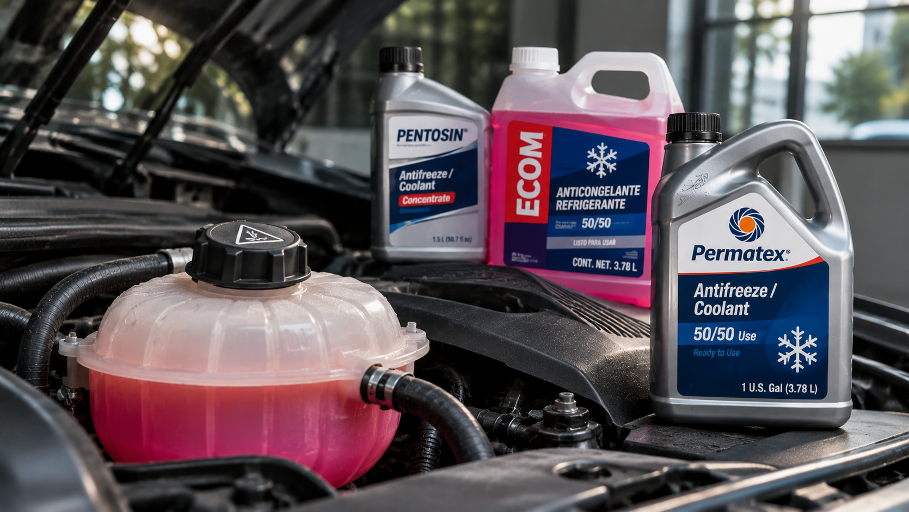

FILTRACIÓN
Filtros
Encuentra filtros de aire, cabina y aceite para tu vehículo.
MANN-FILTER · RIDEX · RIDEX PLUS · PUROLATORREFACCIONES AUTOMOTRICES
Encuentra las refacciones que tu vehículo necesita. Te ayudamos a localizar la pieza adecuada para tu modelo y encontrar la mejor opción.
Solicita tu cotización
Refacciones para distintas marcas y modelos de vehículos.
Te ayudamos a localizar la pieza adecuada para tu vehículo.
Contáctanos por WhatsApp y solicita tu cotización.
LO QUE ENCUENTRAS EN RAE
Conoce algunas de las categorías y marcas que manejamos.

Encuentra filtros de aire, cabina y aceite para tu vehículo.
MANN-FILTER · RIDEX · RIDEX PLUS · PUROLATOR
Opciones para el sistema de frenado de tu vehículo.
RIDEX · RIDEX PLUS
Productos para el mantenimiento del sistema de frenos.
BREMBO
Componentes para el sistema de encendido de tu vehículo.
BOSCH
Componentes para el funcionamiento del sistema de encendido.
DELPHI
Productos para el cuidado y mantenimiento del motor.
MOTUL
Líquido limpiaparabrisas y limpiador de frenos.
ECOM
Productos para el cuidado y mantenimiento del sistema de refrigeración de tu vehículo.
ECOM · PERMATEX · PENTOSIN